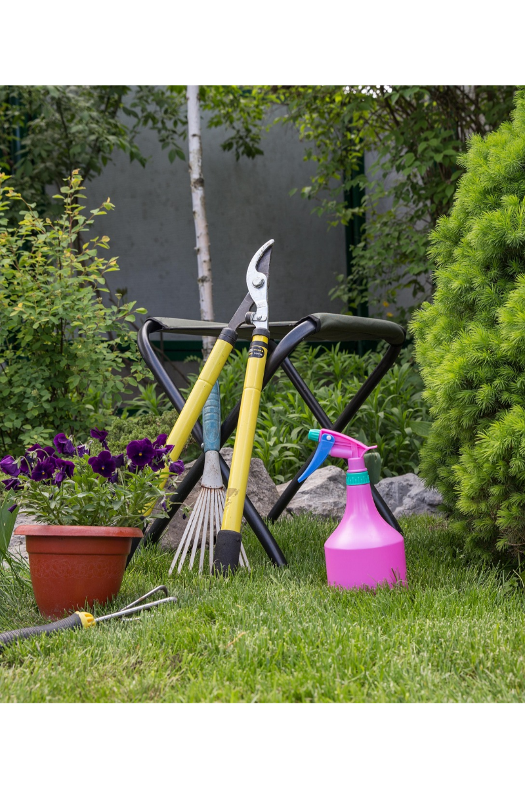

Welcome Gardeners!
Welcome, Gardeners of All Kinds! New to gardening? Need a refresher? This site is your go-to guide for anyone interested in growing, whether you're just starting out, returning to the hobby, or a lifelong gardener. From soil testing and sunlight needs to pollinator-friendly planting and seasonal tips, we’ve gathered the essentials to help your garden thrive. With easy-to-follow advice, science-backed practices, and a passion for green spaces, this guide is designed for gardeners of all ages and experience levels. There’s something here for everyone, dig in and grow with us!
Be sure to check out the Zone Checker, and explore our other pages for more valuable tips on soil health, pollinators, and everything your garden needs to flourish.
Know Your Zones
Click below to visit the official USDA Hardiness Zone map and discover your planting zone.
Discover the best soil and sunlight for every plant.
Explore native, seasonal, and zone-appropriate flowers.
Learn about crossbreeding, companion planting, and biodiversity.
Find invasive species to avoid and how to spot them.
Ready to Grow?
Whether you're sowing your first seed or planning your next pollinator bed, there's something here for you. Dive deeper into our plant guide, explore soil science, or check out upcoming events near you.
Explore the Plant Guide
Welcome to Our Plant Guide
Your One-Stop Shop for Planting Success
Welcome to the ultimate guide for growing your favorite plants successfully.
🌱Gardening Basics
- Sunlight: Most plants require 6–8 hours of direct sunlight daily.
- Watering: Water in the morning to reduce evaporation and prevent disease.
- Spacing: Proper spacing ensures adequate airflow and reduces disease risk.
- Mulching: Helps retain moisture and suppress weeds.
🛠️ Essential Tools
- Hand trowel
- Pruning shears
- Watering can or hose
- Gardening gloves
- Kneeling Pad
- Garden Scissors
- Rake
- Compost Bin
- Garden Cart
- Twine
🌾 Choosing the Right Soil
- Loamy soil: Ideal for most plants due to its balanced texture and fertility.
- Soil testing: Determine pH and nutrient levels for optimal plant health.
- Compost: Enriches soil with organic matter and nutrients.
- Drainage: Ensure soil drains well to prevent root rot.
🌍 Understanding Your Planting Zone
- What it is: Your USDA Hardiness Zone determines what plants can survive your local winters.
- Why it matters: Choosing plants suited to your zone helps avoid frost damage and poor growth.
- How to find yours: Use the to search by ZIP code.
- Pro tip: Don't rely on just zone number—consider humidity, sunlight, and microclimates too.
🌀 Annuals vs Perennials
- Annuals: Live for one season. Bloom fast and often (e.g., zinnias, tomatoes, marigolds).
- Perennials: Come back year after year. Often bloom later but last longer (e.g., lavender, hostas).
- Biennials: Take two years to mature and bloom (e.g., parsley, foxglove).
- Tip: Mix annuals for color and perennials for structure to get the best of both worlds.
🛒 Where to Buy Plants
- Lively Root: Offers a wide variety of indoor and outdoor plants delivered to your doorstep.
- House Plant Shop: A one-stop shop for everything houseplants, including rare and exotic varieties.

Soil & Sunlight
Learn how soil types and sunlight exposure affect plant growth and health.
Companion Planting
Discover which plants grow better together and how to maximize your garden’s harmony.
Crossbreeding
Explore fun ways to experiment with plant genetics in your own backyard.
Invasive Species
Identify and manage invasive species that could threaten your garden ecosystem.
Help Videos
Watch our helpful videos for visual guides on planting, maintenance, and garden hacks.